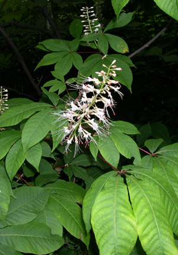

Previous || Next || Return to Mystery Plants || USC Herbarium
This Week's Mystery Plant | Dr. John B. Nelson Curator, USC Herbarium |
|
I was just recently in Germany, spending some time in Bavaria. Münich is one of the most charming cities you can visit in Europe: it's a fairly large town, but real easy to get around in, and there's lots to see and do. One of the nicest places to visit there is the botanical garden (http://www.botanischestaatssammlung.de), which is located near the famous Nymphenburg Castle. The garden maintains plenty of lavish greenhouses, featuring among other things, a fantastic assortment of water lilies, instructive displays of economically important plants, and a huge assortment of cacti and other succulents. There is also a garden café that's a good place for lunch. (The food there is not the best I've had in Germany, but it's certainly not the wurst.) Sorry. Anyway, we were taking it all in along the walks, when lo and behold, we were face to face with a true denizen of the Southeastern USA. This is a shrub that occurs in various parts of Alabama and east into southwestern Georgia, and then skipping over into South Carolina, where it is very rare, and only along the north side of the Savannah River. Its leaves are prominently and palmately divided into five leaflets, these finely toothed. The small flowers are held on an erect stalk, and a wonderful bottle-brush effect is produced when in full bloom (late summer). Each flower comes with five lackluster petals. It's the stamens which are the flamboyant part of the flower, these well-exserted on a long, slender filament, and tipped with a reddish anther. This plant is easy to grow. I've seen it in cultivation at the New York Botanical Garden, and it can also stand the winters as far inland as Illinois. You can see it growing in the wild at Savannah River Bluffs Heritage Preserve. (If you'd like more information about this site, contact the Wildlife Diversity Section, S.C. Department of Natural Resources, P0 Box 167, Columbia, SC 29202, or call 803/734-3893. |
 Photo by Richard Wnek |